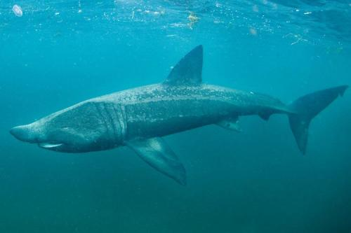

<!DOCTYPE html>
<html lang="en">
<head>
    <meta charset="UTF-8">
    <meta name="viewport" content="width=device-width, initial-scale=1.0">
    <title>Sharks of the Week</title>
</head>
<meta name="viewport" content="width=device-width, initial-scale=1">
<body>
    
</body>
</html>
 <style>
        #parent-div {
            background-color: rgb(169, 209, 243); padding: 8px;
        }
        #nav-list li{
            display: inline;
            color: black;
            margin: 10vw;
            line-height: 2.0;
        }
        #nav-list li a{
            color: black;
        }

        html {
            font-size: 16px;
        }

        h1 {
            font-size: 2.5rem;
        }

        h3 {
            font-size: 1.5rem;
        }

        p {
            font-size: 1rem;
        }
</style>
<link href="https://fonts.googleapis.com/css2?family=Archivo:ital,wght@0,100..900;1,100..900&family=Montserrat:ital,wght@0,100..900;1,100..900&display=swap" rel="stylesheet">
<style>
body {
        font-family: "Montserrat", sans-serif;
    }
    h1 {
        font-family: "Montserrat", sans-serif;
    }
    h3 {
        font-family: "Montserrat", sans-serif;
        line-height: 3.0;
    }
    p {
        font-family: "Montserrat", sans-serif;
    }
</style>
</head>
<body>
    <div id="parent-div">
        <ul id="nav-list">
            <li style="display: inline;"><a href="index.html">Home</a></li>
            <li style="display: inline;"><a href="about.html">About</a></li>
            <li style="display: inline;"><a href="sharks.html">Sharks</a></li>
            <li style="display: inline;"><a href="sharksinfilm.html">In Film</a></li>
        </ul>
    </div>
<header></header>
    <h1 style="text-align: center; margin-top: 60px;">Sharks of the Week</h1>
    <h3 style="text-align: center; margin-bottom: 80px;">Basking Shark</h3>  
    
    
    <p style="text-align: center; line-height: 2.0;">Basking sharks are an incredible example of the gentle giant. They are the second-largest fish in the world, and can open their mouths up to 3 feet wide! Don't worry though, they only feed on plankton. Basking sharks normally hang out near the surface of the water, but have been known to dive deeper in tropical climates.</p>
<style>
    img {
        max-width: 100%
    }

    p {
        max-width: 80vw;
        margin-left: 10vw;
        margin-right: 10vw;
        text-align: center;
        font-family: "Montserrat", sans-serif;
    }

    @media screen and (max-width: 48rem) {
        p {
            max-width: 80vw;
            margin-left: 10vw;
            margin-right: 10vw;
            text-align: center;
        }
    }
</style>